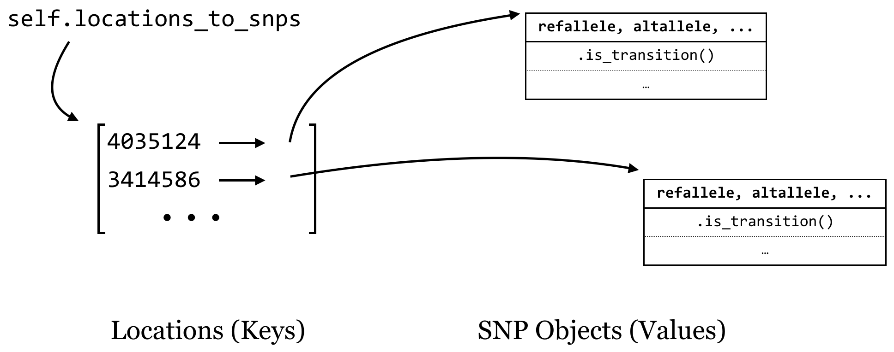
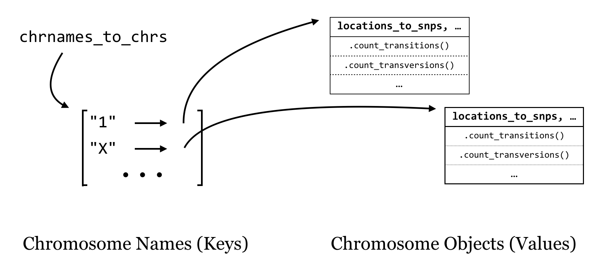
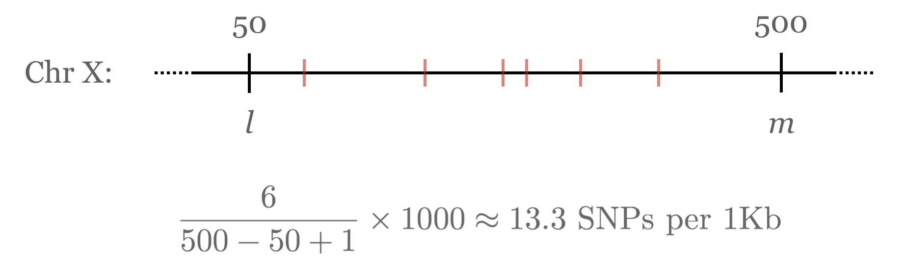

Chapter 26 Use Case: Counting SNPs
As it turns out, multiple classes can be defined that interact with each other: instance variables of a custom class may refer to custom object types. Consider the file trio.subset.vcf, a VCF (variant call format) file for describing single-nucleotide polymorphisms (SNPs, pronounced “snips”) across individuals in a group or population. In this case, the file represents a random sampling of SNPs from three people—a mother, a father, and their daughter—compared to the reference human genome.74
##fileformat=VCFv4.0
##INFO=
##INFO=
##INFO=
##reference=human_b36_both.fasta
##FORMAT=
##FORMAT=
##FORMAT=
#CHROM POS ID REF ALT QUAL FILTER INFO FORMAT NA12891
1 799739 rs57181708 A G . PASS AA=-;DP=141
1 805678 . A T . PASS AA=a;DP=185 GT:GQ:DP
1 842827 rs4970461 T G . PASS AA=G;DP=114
1 847591 rs6689107 T G . PASS AA=G;DP=99
1 858267 rs13302914 C T . PASS AA=.;DP=84
1 877161 . C T . PASS AA=.;DP=89 GT:GQ:DP
1 892860 rs7524174 G A . PASS AA=G;DP=105
1 917172 rs2341362 T C . PASS AA=t;DP=133;HM3
...
This file contains a variety of information, including header lines starting with # describing some of the coding found in the file. Columns 1-5 contain the chromosome number of the SNP, the SNP’s position on the chromosome, the ID of the SNP (if it has previously been described in human populations), the base identity of the reference at that position, and an alternative base found in one of the three family members, respectively. Other columns describe various information; this file follows the “VCF 4.0” format, which is described in more detail at https://www.internationalgenome.org/wiki/Analysis/vcf4.0. Some columns contain a . entry, which indicates that the information isn’t present; in the case of the ID column, these represent novel polymorphisms identified in this trio.
For this example, we are interested in the first five columns, and the main questions are: - How many transitions (A vs. G or C vs. T) are there within the data for each chromosome? - How many transversions (anything else) are there within the data for each chromosome?
We may in the future have other questions about transitions and transversions on a per-chromosome basis. To answer the questions above, and to prepare for future ones, we’ll start by defining some classes to represent these various entities. This example will prove to be a bit longer than others we’ve studied, partially because it allows us to illustrate answering multiple questions using the same codebase if we do some extra work up front, but also because object-oriented designs tend to result in significantly more code (a common criticism of using classes and objects).
SNP Class
A SNP object will hold relevant information about a single nonheader line in the VCF file. Instance variables would include the reference allele (a one-character string, e.g., "A"), the alternative allele (a one-character string, e.g., "G"), the name of the chromosome on which it exists (a string, e.g., "1"), the reference position (an integer, e.g., 799739), and the ID of the SNP (e.g., "rs57181708" or "."). Because we’ll be parsing lines one at a time, all of this information can be provided in the constructor.
SNP objects should be able to answer questions: .is_transition() should return True if the SNP is a transition and False otherwise by looking at the two allele instance variables. Similarly, .is_transversion() should return True if the SNP is a transversion and False otherwise.
Chromosome Class
A Chromosome object will hold data for an individual chromosome, including the chromosome name (a string, e.g., "1"), and all of the SNP objects that are located on that chromosome. We could store the SNP objects in a list, but we could also consider storing them in a dictionary, which maps SNP locations (integers) to the SNP objects. Then we can not only gain access to the list of SNPs (using the dictionary’s .values() method) or the list of locations (using the dictionary’s .keys() method), but also, given any location, we can get access to the SNP at that location. (We can even use in to determine whether a SNP exists at a given location.)

The chromosome constructor will initialize the name of the chromosome as self.chrname, but the snps dictionary will start as empty.
A Chromosome object should be able to answer questions as well: .count_transitions() should tell us the number of transition SNPs, and .count_transversions() should return the number of transversion SNPs. We’re also going to need some way to add a SNP object to a chromosome’s SNP dictionary because it starts empty. We’ll accomplish this with an .add_snp() method, which will take all of the information for a SNP, create the new SNP object, and add it to the dictionary. If a SNP already exists at that location, an error should occur, because our program shouldn’t accept VCF files that have multiple rows with the same position for the same chromosome.
For overall strategy, once we have our classes defined (and debugged), the “executable” portion of our program will be fairly simple: we’ll need to keep a collection of Chromosome objects that we can interact with to add SNPs, and at the end we’ll just loop through these and ask each how many transitions and transversions it has. It makes sense to keep these Chromosome objects in a dictionary as well, with the keys being the chromosome names (strings) and the values being the Chromosome objects. We’ll call this dictionary chrnames_to_chrs.

As we loop through each line of input (reading a file name given in sys.argv[1]), we’ll split it apart and check whether the chromosome name is in the dictionary with in. If so, we’ll ask the object in that slot to add a SNP with .add_snp(). If not, then we’ll need to first create a new Chromosome object, ask it to .add_snp(), and finally add it to the dictionary. Of course, all of this should happen only for nonheader lines.
We’ll start with the SNP class, and then the Chromosome class. Although it is difficult to show here, it’s a good idea to work on and debug each method in turn (with occasional print() statements), starting with the constructors. Because a SNP is only a SNP if the reference and alternative allele differ, we’ll assert this condition in the constructor so an error is produced if we ever try to create a nonpolymorphic SNP (which wouldn’t actually be a SNP at all).
#!/usr/bin/env python
## Imports we are likely to need:
import sys
import re
## A class representing simple SNPs
class SNP:
def __init__(self, chrname, pos, snpid, refallele, altallele):
assert refallele != altallele, f"Error: ref == alt at pos {pos}"
self.chrname = chrname
self.pos = pos
self.snpid = snpid
self.refallele = refallele
self.altallele = altallele
## Returns True if refallele/altallele is A/G, G/A, C/T, or T/C
def is_transition(self):
if self.refallele == "G" or self.refallele == "A":
if self.altallele == "G" or self.altallele == "A":
return True
if self.refallele == "C" or self.refallele == "T":
if self.altallele == "C" or self.altallele == "T":
return True
return False
## Returns True if the snp is a transversion (ie, not a transition)
def is_transversion(self):
if self.is_transition():
return False
return True
Note the shortcut that we took in the above code for the .is_transversion() method, which calls the .is_transition() method and returns the opposite answer. This sort of “shortcut” coding has its benefits and downsides. One benefit is that we can reuse methods rather than copying and pasting to produce many similar chunks of code, reducing the potential surface area for bugs to occur. A downside is that we have to be more careful - in this case, we’ve had to ensure that the alleles differ (via the assert in the constructor), so a SNP must be either a transition or transversion. (Is this actually true? What if someone were to attempt to create a SNP object with non-DNA characters? It’s always wise to consider ways code could be inadvertently misused.)
The above shows the start of the script and the SNP class; code like this could be tested with just a few lines:
## transition test; should not result in "Failed Test"
snp1 = SNP("1", 12351, "rs11345", "C", "T")
assert snp1.is_transition() == True, "Failed Test" ## Does not error
## transversion test; should not result in "Failed Test"
snp2 = SNP("1", 36642, "rs22541", "A", "T")
assert snp2.is_transversion() == True, "Failed Test" ## Does not error
## error test; should result in "Error: ref == alt at pos 69835"
snp3 = SNP("1", 69835, "rs53461", "A", "A") ## Results in error
Although we won’t ultimately leave these testing lines in, they provide a good sanity check for the code. If these checks were wrapped in a function that could be called whenever we make changes to the code, we would have what is known as a unit test, or a collection of code (often one or more functions), with the specific purpose of testing functionality of other code for correctness.75 These can be especially useful as code changes over time.
Let’s continue on with the Chromosome class. Note that the .add_snp() method contains assertions that the SNP location is not a duplicate and that the chromosome name for the new SNP matches the chromosome’s self.chrname.
# ...
## A class representing a chromosome, which has a collection of SNPs
class Chromosome:
def __init__(self, chrname):
self.chrname = chrname
self.locations_to_snps = dict()
## Returns the chromosome name
def get_name(self):
return self.chrname
def add_snp(self, chrname, pos, snpid, refallele, altallele):
'''Given all necessary information to add a new SNP, create a new SNP object
and add it to the SNPs dictionary. If a SNP already exists at that location, or
the given chrname doesn't match self.chrname, an error is reported.'''
## If there is already an entry for that SNP, throw an error
open_location = not(pos in self.locations_to_snps)
assert open_location, f"Duplicate SNP: {self.chrname}:{pos}"
## If the chrname doesn't match self.chrname, throw an error
assert chrname == self.chrname, "Chr name mismatch!"
## Otherwise, create the SNP object and add it to the dictionary
newsnp = SNP(chrname, pos, snpid, refallele, altallele)
self.locations_to_snps[pos] = newsnp
Now we can write the methods for .count_transitions() and .count_transversions(). Because we’ve ensured that each SNP object is either a transition or a transversion, and no locations are duplicated within a chromosome, the .count_transversions() method can make direct use of the .count_transitions() method and the total number of SNPs stored via len(self.locations_to_snps). (Alternatively, we could make a count_transversions() that operates similarly to count_transitions() by looping over all the SNP objects.)
# ...(inside class Chromosome:)
def count_transitions(self):
'''Returns the number of transition SNPs stored in the chromosome'''
count = 0
for location in self.locations_to_snps:
snp = self.locations_to_snps[location]
if snp.is_transition():
count += 1
return count
def count_transversions(self):
'''Returns the number of transversion SNPs stored in this chromosome'''
total_snps = len(self.locations_to_snps)
return total_snps - self.count_transitions()
The corresponding test code is below. Here we are using assert statements, but we could also use lines like print(chr1.count_transitions()) and ensure the output is as expected.
## A test chromosome
chr1 = Chromosome("testChr")
chr1.add_snp("testChr", 24524, "rs15926", "G", "T")
chr1.add_snp("testChr", 62464, "rs61532", "C", "T")
## These should not fail:
assert chr1.count_transitions() == 1, "Failed Test"
assert chr1.count_transversions() == 1, "Failed Test"
## This should fail with a "Duplicate SNP" error:
chr1.add_snp("testChr", 24524, "rs88664", "A", "C")
With the class definitions created and debugged, we can write the “executable” part of the program, concerned with parsing the input file (from a filename given in sys.argv[1]) and printing the results. First, the portion of code that checks whether the user has given a file name (and produces some help text if not) and reads the data in. Again, we are storing a collection of Chromosome objects in a chrnames_to_chrs dictionary. For each VCF line, we determine whether a Chromosome with that name already exists: if so, we ask that object to .add_snp(). If not, we create a new Chromosome object, ask it to .add_snp(), and add it to the dictionary.
# ...
## Check usage syntax, read filename
if len(sys.argv) != 2:
print("This program parses a VCF 4.0 file and counts")
print("transitions and transversions on a per-chromosome basis.")
print("")
print("Usage: ./snps_ex.py ")
quit()
filename = sys.argv[1]
## Create chrnames_to_chrs dictionary, parse the input file
chrnames_to_chrs = dict()
with open(filename, "r") as fhandle:
for line in fhandle:
# don't attempt to parse header lines
if line[0] != "#":
line_stripped = line.strip()
line_list = re.split(r"\s+", line_stripped)
chrname = line_list[0]
pos = int(line_list[1])
snpid = line_list[2]
refallele = line_list[3]
altallele = line_list[4]
## Put the data in the dictionary
if chrname in chrnames_to_chrs:
chr_obj = chrnames_to_chrs[chrname]
chr_obj.add_snp(chrname, pos, snpid, refallele, altallele)
else:
chr_obj = Chromosome(chrname)
chr_obj.add_snp(chrname, pos, snpid, refallele, altallele)
chrnames_to_chrs[chrname] = chr_obj
In the chr_obj = chrnames_to_chrs[chrname] line above, we are defining a variable referring to the Chromosome object in the dictionary, and after that we are asking that object to add the SNP with .add_snp(). We could have combined these two with syntax like chrnames_to_chrs[chrname].add_snp().
Finally, a small block of code prints out the results by looping over the keys in the dictionary, accessing each Chromosome object and asking it the number of transitions and transversions:
# ...
## Print the results!
print(f"chrom\ttransitions\ttransversions")
for chrname in chrnames_to_chrs:
chr_obj = chrnames_to_chrs[chrname]
trs = chr_obj.count_transitions()
trv = chr_obj.count_transversions()
print(f"{chrname}\t{trs}\t{trv}")
We’ll have to remove or comment out the testing code (particularly the tests we expected to fail) to see the results. But once we do that, we can run the program (called snps_ex.py).
[oneils@mbp ~/apcb/py]$ chmod +x snps_ex.py
[oneils@mbp ~/apcb/py]$ ./snps_ex.py trio.sample.vcf
chrom transitions transversions
1 9345 4262
2 10309 5130
3 8708 4261
4 9050 4372
5 7586 3874
6 7874 3697
7 6784 3274
8 6520 3419
9 5102 2653
10 6165 2952
11 5944 2908
12 5876 2700
13 4926 2368
14 4016 1891
15 3397 1676
16 3449 1891
17 3024 1357
18 3791 1738
19 2198 962
20 2656 1187
21 1773 848
22 1539 639
X 3028 1527
What we’ve created here is no small thing, with nearly 150 lines of code! And yet each piece of code is encapsulated in some way; even the long for loop represents the code to parse the input file and populate the chrnames_to_chrs dictionary. By clearly naming our variables, methods, and classes we can quickly see what each entity does. We can reason about this program without too much difficulty at the highest level of abstraction but also delve down to understand each piece individually. As a benefit, we can easily reuse or adapt this code in a powerful way by adding or modifying methods.
An Extension: Searching for SNP-Dense Regions
Counting transitions and transversions on a per-chromosome basis for this VCF file could have been accomplished without defining classes and objects. But one of the advantages of spending some time organizing the code up front is that we can more easily answer related questions about the same data.
Suppose that, having determined the number of transitions and transversions per chromosome, we’re now interested in determining the most SNP-dense region of each chromosome. There are a number of ways we could define SNP density, but we’ll choose an easy one: given a region from positions \(l\) to \(m\), the density is the number of SNPs occurring within \(l\) and \(m\) divided by the size of the region, \(m – l + 1\), times 1,000 (for SNPs per 1,000 base pairs).

For a Chromosome object to be able to tell us the highest-density region, it will need to be able to compute the density for any given region by counting the SNPs in that region. We can start by adding to the chromosome class a method that computes the SNP density between two positions \(l\) and \(m\).
# ... (inside class Chromosome:)
def density_region(self, l, m):
'''returns the number of snps between l and m, divided by the size of the region'''
count = 0
for location in self.locations_to_snps:
if location >= l and location <= m:
count += 1
size = m - l + 1
return 1000*count/size
After debugging this method and ensuring it works, we can write a method that finds the highest-density region. But how should we define our regions? Let’s say we want to consider regions of 100,000 bases. Then we might consider bases 1 to 100,000 to be a region, 100,001 to 200,000 to be a region, and so on, up until the start of the region considered is past the last SNP location. We can accomplish this with a while-loop. The strategy will be to keep information on the densest region found so far (including its density as well as start and end location), and update this answer as needed in the loop.76
# ... (inside class Chromosome:)
def max_density(self, region_size):
'''Given a region size, looks at non-overlapping windows
of that size and returns a list of three elements for
the region with the highest density:
[density of region, start of region, end of region]'''
region_start = 1
## default answer if no SNPs exist [density, start, end]:
best_answer = [0.0, 1, region_size - 1]
## todo: implement this method
last_snp_position = self.get_last_snp_position()
while region_start < last_snp_position:
region_end = region_start + region_size - 1
region_density = self.density_region(region_start, region_end)
# if this region has a higher density than any we've seen so far:
if region_density > best_answer[0]:
best_answer = [region_density, region_start, region_end]
region_start = region_start + region_size
return best_answer
In the above, we needed to access the position of the last SNP on the chromosome (so that the code could stop considering regions beyond the last SNP). Rather than write that code directly in the method, we decided that should be its own method, and marked it with a “todo” comment. So, we need to add this method as well:
# ... (inside class Chromosome:)
def get_last_snp_position(self):
'''returns the position of the last SNP known'''
locations = list(self.locations_to_snps.keys())
locations.sort()
return locations[len(locations) - 1]
In the code that prints the results, we can add the new call to .max_density(100000) for each chromosome, and print the relevant information.
# ...
## Print the results!
print(f"chrom\ttransitions\ttransversions\tdensity\tregion")
for chrname in chrnames_to_chrs:
chr_obj = chrnames_to_chrs[chrname]
trs = chr_obj.count_transitions()
trv = chr_obj.count_transversions()
max_dens_list = chr_obj.max_density(100000)
density = max_dens_list[0]
region_start = max_dens_list[1]
region_end = max_dens_list[2]
print(f"{chrname}\t{trs}\t{trv}\t{density}\t{region_start}..{region_end}")
Let’s call our new snps_ex_density.py (piping the result through column -t to more easily see the tab-separated column layout):
[oneils@mbp ~/apcb/py]$ chmod +x snps_ex_density.py
[oneils@mbp ~/apcb/py]$ ./snps_ex_density.py trio.sample.vcf | column -t
chrom transitions transversions density region
1 9345 4262 0.25 105900001..106000000
2 10309 5130 0.24 225700001..225800000
3 8708 4261 0.26 166900001..167000000
4 9050 4372 0.27 162200001..162300000
5 7586 3874 0.24 8000001..8100000
6 7874 3697 0.81 32600001..32700000
7 6784 3274 0.24 2000001..2100000
8 6520 3419 0.42 4000001..4100000
9 5102 2653 0.26 11700001..11800000
10 6165 2952 0.26 2000001..2100000
11 5944 2908 0.26 6000001..6100000
12 5876 2700 0.26 130500001..130600000
13 4926 2368 0.25 88000001..88100000
14 4016 1891 0.23 40000001..40100000
15 3397 1676 0.28 96600001..96700000
16 3449 1891 0.33 12500001..12600000
17 3024 1357 0.23 61400001..61500000
18 3791 1738 0.22 49700001..49800000
19 2198 962 0.21 15600001..15700000
20 2656 1187 0.22 15000001..15100000
21 1773 848 0.26 19100001..19200000
22 1539 639 0.22 47400001..47500000
X 3028 1527 0.15 800001..900000
Again, none of the individual methods or sections of code are particularly long or complex, yet together they represent a rather sophisticated analysis program.
Summary
Perhaps you find these examples using classes and objects for problem solving to be elegant, or perhaps not. Some programmers think that this sort of organization results in overly verbose and complex code. It is certainly easy to get too ambitious with the idea of classes and objects. Creating custom classes for every little thing risks confusion and needless hassle. In the end, it is up to each programmer to decide what level of encapsulation is right for the project; for most people, good separation of concepts by using classes is an art form that requires practice.
When should you consider creating a class? - When you have many different types of data relating to the same concept, and you’d like to keep them organized into single objects as instance variables. - When you have many different functions related to the same concept, and you’d like to keep them organized into single objects as methods. - When you have a concept that is simple now, but you suspect might increase in complexity in the future as you add to it. Like functions, classes enable code to be reused, and it is easy to add new methods and instance variables to classes when needed.
Inheritance and Polymorphism
Despite this discussion of objects, there are some unique features of the object-oriented paradigm that we haven’t covered but are sometimes considered integral to the topic. In particular, most object-oriented languages (Python included) support inheritance and polymorphism for objects and classes.
Inheritance is the idea that some types of classes may be represented as special cases of other types of classes. Consider a class defining a Sequence, which might have instance variables for self.seq and self.id. Sequences might be able to report their length, and so might have a .length_bp() method, returning len(self.seq). There may also be many other operations a generic Sequence could support, like .get_id(). Now, suppose we wanted to implement an OpenReadingFrame class; it too should have a self.id and a self.seq and be able to report its .length_bp(). Because an object of this type would represent an open reading frame, it probably should also have a .get_translation() method returning the amino-acid translation of its self.seq. By using inheritance, we can define the OpenReadingFrame class as a type of Sequence class, saving us from having to re-implement .length_bp() — we’d only need to implement the class-specific .get_translation() method and any other methods would be automatically inherited from the Sequence class.
class Sequence:
def __init__(self, gid, seq):
self.gid = gid
self.seq = seq
def get_id(self):
return self.gid
def length_bp(self):
return len(self.seq)
# OpenReadingFrame *inherits* from Sequence
# as well as defines an new method
class OpenReadingFrame(Sequence):
def __init__(self, gid, seq):
self.gid = gid
self.seq = seq
def get_translation(self):
return dna_to_aa(self.seq)
geneA = Sequence("SeqA", "CATGAG")
geneB = OpenReadingFrame("SeqB", "ATGCCCTGA")
print(geneA.length_bp()) # prints 6
print(geneB.length_bp()) # prints 9
Polymorphism is the idea that inheriting class types don’t have to accept the default methods inherited, and they are free to re-implement (or “override”) specific methods even if their “parent” or “sibling” classes already define them. For example, we might consider another class called AminoAcidSequence that inherits from Sequence, so it too will have a .get_id() and .length_bp(); in this case, though, the inherited .length_bp() would be wrong, because len(self.seq) would be three times too short. So, an AminoAcidSequence could override the .length_bp() method to return 3*len(self.seq). The interesting feature of polymorphism is that given an object like gene_A, we don’t even need to know what “kind” of Sequence object it is: running gene_A.length_bp() will return the right answer if it is any of these three kinds of sequence.
# ...
## AminoAcidSequence *inherits* from Sequence
## as well as overrides an existing method
class AminoAcidSequence(Sequence):
def __init__(self, gid, seq):
self.gid = gid
self.seq = seq
def length_bp(self):
return(3*len(self.seq))
geneC = AminoAcidSequence("SeqC", "RQVDYW")
print(geneC.length_bp()) # prints 18
print(geneC.get_id()) # prints "SeqC"
These ideas are considered by many to be the defining points of “object-oriented design,” and they allow programmers to structure their code in hierarchical ways (via inheritance) while allowing interesting patterns of flexibility (via polymorphism). We haven’t covered them in detail here, as making good use of them requires a fair amount of practice. Besides, the simple idea of encapsulating data and functions into objects provides quite a lot of benefit in itself!
Exercises
Modify the
snps_ex_density.pyscript to output, for each 100,000 bp region of each chromosome, the percentage of SNPs that are transitions and the number of SNPs in each window. The output should be a format that looks like so:chromosome region percent_transitions num_snps 1 1..100000 0.5646 12 1 100001..200000 0.5214 16 1 200001..300000 0.4513 7 1 300001..400000 0.3126 19 ...In the section on R programming (chapter 40, “Plotting Data and ggplot2”), we’ll discover easy ways to visualize this type of output.
The
randommodule (used withimport random) allows us to make random choices; for example,random.random()returns a random float between0.0and1.0. Therandom.randint(a, b)function returns a random integer betweenaandb(inclusive); for example,random.randint(1, 4)could return1,2,3, or4. There’s also arandom.choice()function; given a list, it returns a single element (at random) from it. So, ifbases = ["A", "C", "T", "G"], thenrandom.choice(bases)will return a single string, either"A","C","T", or"G".Create a program called
pop_sim.py. In this program write aBugclass; a “bug” object will represent an individual organism with a genome, from which a fitness can be calculated. For example, ifa = Bug(), perhaps a will have aself.genomeas a list of 100 random DNA bases (e.g.["G", "T", "A", "G", ...]; these should be created in the constructor). You should implement a.get_fitness()method which returns a float computed in some way fromself.genome, for example the number of G or C bases, plus 5 if the genome contains three"A"characters in a row.Bugobjects should also have a.mutate_random_base()method, which causes a random element ofself.genometo be set to a random element from["A", "C", "G", "T"]. Finally, implement a.set_base()method, which sets a specific index in the genome to a specific base:a.set_base(3, "T")should setself.genome[3]to"T".Test your program by creating a list of 10
Bugobjects, and in a for loop, have each run its.mutate_random_base()method and print its new fitness.Next, create a
Populationclass.Populationobjects will have a list ofBugobjects (say, 50) calledself.bug_list.This Population class should have a
.create_offspring()method, which will:- create a new_pop list
- for each element
oldbugofself.bug_list:- create a new
Bugobjectnewbug - and set the genome of
newbug(one base at a time) to be the same as that ofoldbug - call
newbug.mutate_random_base() - add
oldbugandnewbugtonew_pop.
- create a new
- Finally, this method should set
self.bug_poptonew_pop.
The
Populationclass will also have a.cull()method; this should reduceself.bug_popto the top 50% of bug objects by fitness. (You might find the exercise above discussing.__lt__()and similar methods useful, as they will allow you to sortself.bug_popby fitness if implemented properly.)Finally, implement a
.get_mean_fitness()method, which should return the average fitness ofself.bug_pop.To test your code, instantiate a
p = Population()object, and in a for-loop:- run
p.create_offspring() - run
p.cull() - print
p.get_mean_fitness(), allowing you to see the evolutionary progress of your simulation.
Modify the simulation program above to explore its dynamics. You could consider adding a
.get_best_individual()method to thePopulationclass, for example, or implement a “mating” scheme whereby offspring genomes are mixes of two parent genomes. You could also try tweaking the.get_fitness()method. This sort of simulation is known as a genetic algorithm, especially when the evolved individuals represent potential solutions to a computational problem.77
This file was obtained from the 1000 Human Genomes Project at https://ftp.1000genomes.ebi.ac.uk/vol1/ftp/pilot_data/release/2010_07/trio/snps/, in the file
CEU.trio.2010_03.genotypes.vcf.gz. After decompressing, we sampled 5% of the SNPs at random withawk '{if($1 ~ "##" || rand() < 0.05) {print $0}}' CEU.trio.2010_03.genotypes.vcf > trio.sample.vcf; see chapter 11, “Rows and Columns” for details.↩︎Unit tests are often automated; in fact, Python includes a module for building unit tests called
unittest, although we recommendpytest.↩︎This strategy is not the fastest we could have devised. In order to determine the highest-density region, we have to consider each region, and the computation for each region involves looping over all of the SNP positions (the vast majority of which lie outside the region). More sophisticated algorithms exist that would run much faster, but they are outside the scope of this book. Nevertheless, a slow solution is better than no solution!↩︎
The idea of simulating populations “in silico” is not only quite fun, but has also produced interesting insights into population dynamics. For an example, see Hinton and Nowlan, “How Learning Can Guide Evolution,” Complex Systems 1 (1987): 495–502. Simulation of complex systems using random sampling is commonly known as a Monte Carlo method. For a more fanciful treatment of simulations of natural systems, see Daniel Shiffman, The Nature of Code (2012).↩︎